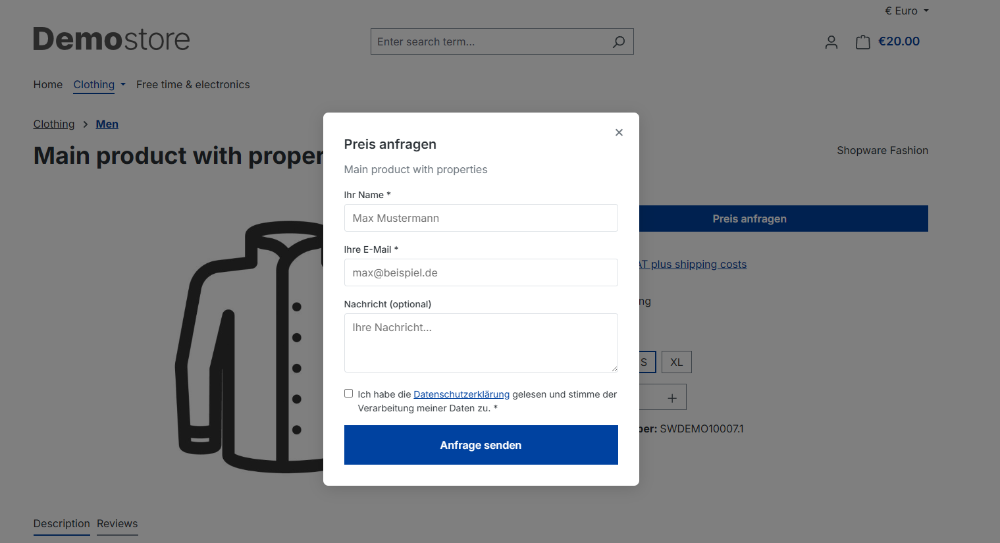
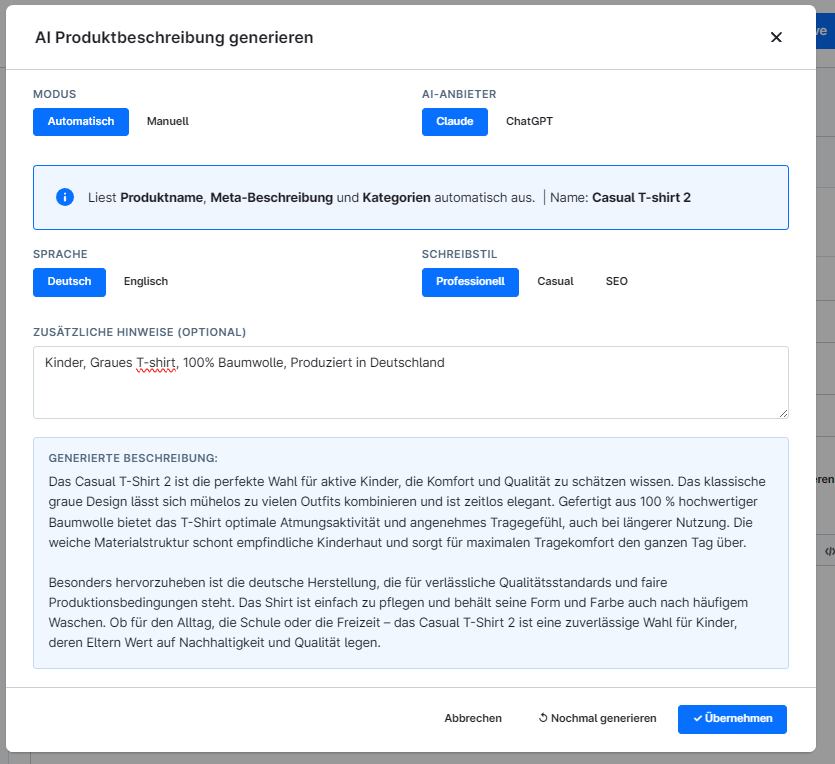
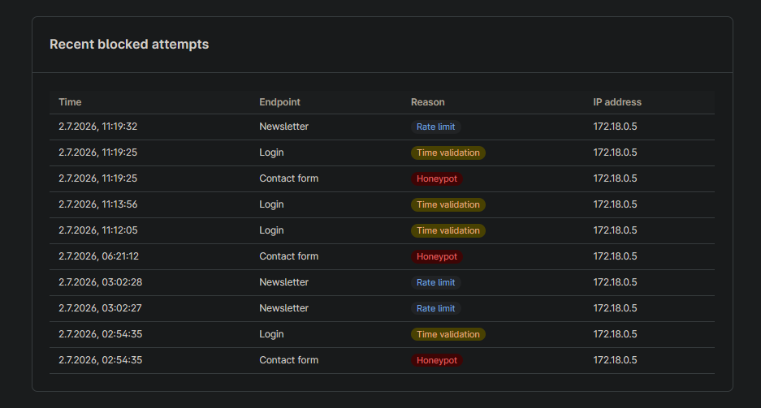
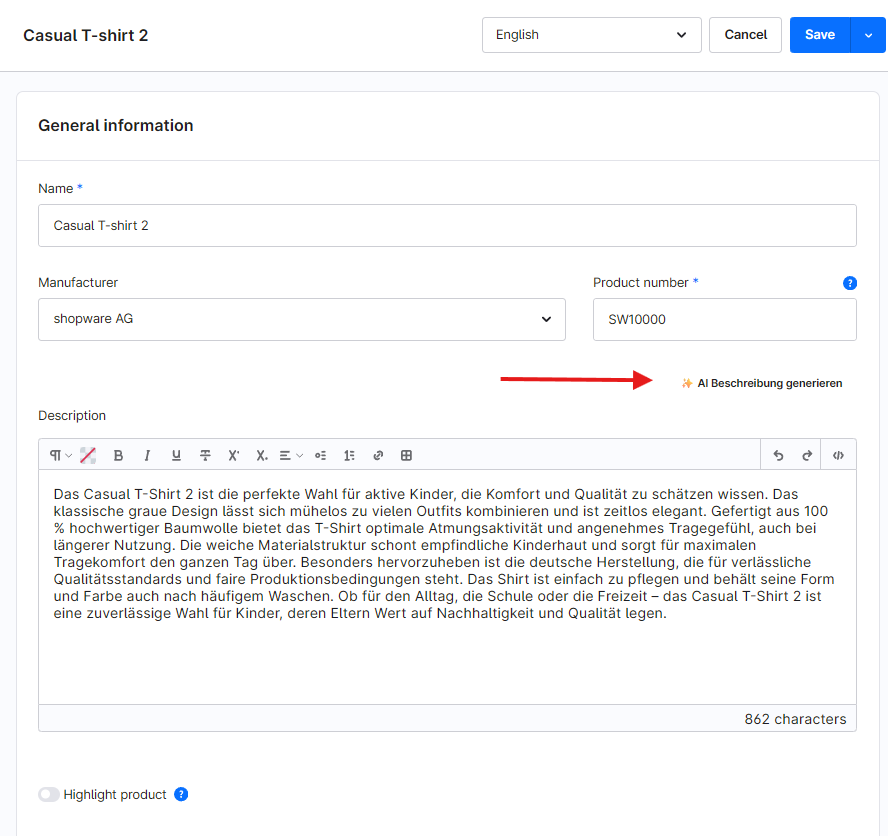
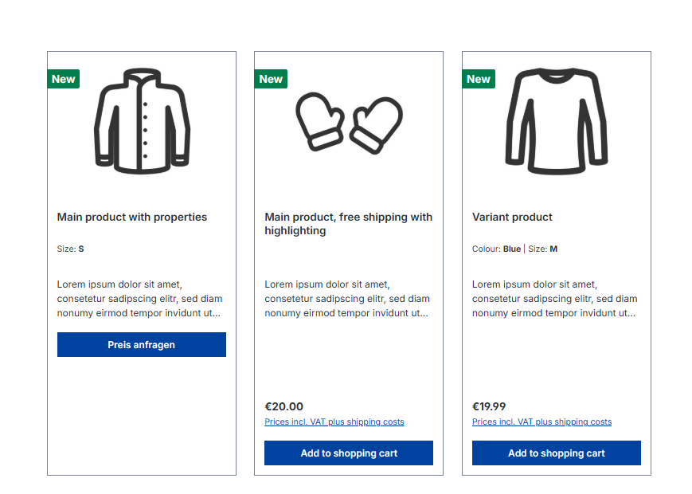
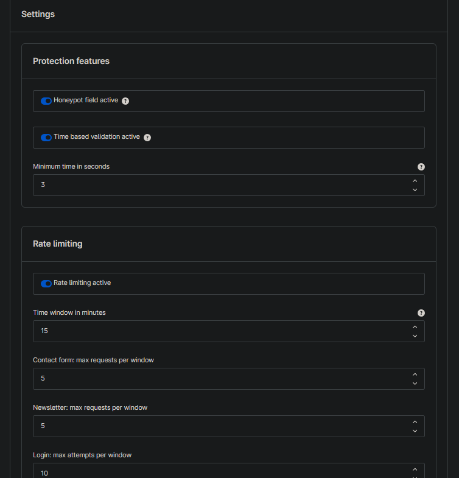

Shopware 5 auf 6 migrieren, JTL-Wawi aktualisieren. Erst auf einer Kopie, dann im Livesystem.
Ich bin Michael Barabanov. Über 30 Shops habe ich live gebracht, ohne dass dabei ein Shop stillstand. Bevor ich ein Update einspiele oder einen Shop migriere, prüfe ich auf einer Kopie, welche Plugins und welches Theme den Versionssprung nicht überleben. Das Ergebnis bekommen Sie schriftlich, bevor etwas passiert.
- Shopware 5 und 6
- JTL-Wawi und JTL-Shop
- schriftlich, ohne Termin
Womit Sie zu mir kommen
Sechs Aufgaben, die regelmäßig bei mir landen. Zu jeder steht dabei, was Sie am Ende in der Hand haben.
Migration von Shopware 5 auf Shopware 6
Shopware 5 bekommt seit Juli 2024 keine Updates vom Hersteller mehr. Wer wechselt, scheitert selten am Shopware-Kern. Es sind die Plugins, das Theme und die Anbindung an die Warenwirtschaft, die im neuen System fehlen oder anders heißen.
Deshalb beginne ich mit einer Bestandsaufnahme. Sie bekommen einen schriftlichen Bericht, mit dem Sie die Migration bei mir oder bei jeder anderen Agentur beauftragen können.
Mehr zur MigrationDen Preis nenne ich nach einer kurzen Prüfung. Er richtet sich nach der Zahl der Plugins und Schnittstellen und ändert sich danach nicht.
- 01Jedes Plugin: gibt es einen Nachfolger für Shopware 6 oder muss es neu gebaut werden
- 02Theme und eigene Anpassungen am Template
- 03Schnittstellen zu Warenwirtschaft, Zahlung und Versand
- 04Aufwandsschätzung für die Migration selbst
Versionsupdates für JTL-Wawi, JTL-Shop 5 und Shopware 6
Ein JTL-Wawi Update ist in einer Stunde eingespielt. Die Arbeit steckt davor: Welche Erweiterungen laufen mit der neuen Version, welche eigenen Vorlagen brechen, wie sieht der Rückweg aus, wenn etwas schiefgeht.
Zuletzt habe ich eine JTL-Wawi von Version 1.11.8 auf 2.0.6 gebracht. Der Kunde hat den Ablauf in seiner Bewertung beschrieben, sie steht weiter unten auf dieser Seite.
Mehr zu Updates- okKompatibilität der eingesetzten Erweiterungen vorab geprüft
- okUpdate zuerst auf einer Kopie der Datenbank getestet
- okCheckliste vorher an den Kunden geschickt
- okLivegang ohne Ausfall, am nächsten Morgen normaler Betrieb
Testsystem mit Übernahme Ihrer Daten
Vor einem Wechsel der Warenwirtschaft oder vor einem großen Update wollen Sie sehen, wie Ihre Artikel, Kunden und Bestellungen im neuen System aussehen. Nicht die Demodaten des Herstellers.
Ich baue ein getrenntes System auf und spiele Ihre Daten ein. Ihr Team probiert die Abläufe durch: Wareneingang, Versand, Retoure, Rechnung. Das Livesystem bleibt unberührt.
Mehr zum Testsystem- 01Eigene Umgebung, die den Livebetrieb nicht berührt
- 02Artikel, Kunden und Bestellungen aus Ihrem Bestand
- 03Zugänge für Ihr Team zum Ausprobieren
- 04Protokoll, welche Datensätze bei der Übernahme nicht sauber durchkamen
Schnittstellen über REST-API
Artikel, Bestände, Preise und Bestellungen sollen zwischen Shop, Warenwirtschaft und Drittsystemen laufen, ohne dass morgens jemand Listen abgleicht.
Ich baue die Anbindung über die REST-API von Shopware 6 oder JTL. Mit Protokoll, aus dem hervorgeht, welcher Datensatz wann übertragen wurde und welcher nicht.
Mehr zu Schnittstellen- 01Shopware 6 zu JTL-Wawi: Artikel, Bestände, Bestellungen
- 02eBay über eazyAuction
- 03Drittsysteme mit eigener API, in beide Richtungen
- 04Hintergrundverarbeitung mit Wiederholung bei Fehlern
Plugin-Entwicklung für Shopware 6
Wenn der Standard nicht reicht und es im Store nichts Passendes gibt. Administrationsbereich, Storefront oder Hintergrundjobs, je nachdem, wo die Lücke ist.
Vier eigene Plugins liegen als Open Source auf GitHub, alle mit Tests. Sie können den Code lesen, bevor Sie mich beauftragen.
Plugins ansehen
Fehlersuche und technisches SEO
Wenn im Shop etwas hakt und keiner sagen kann, warum. Oder wenn der Shop bei Google nicht auftaucht, obwohl Produkte und Preise stimmen.
Ich messe von außen, ohne Zugang zum Shop. Was ich finde, schreibe ich auf. Ein Beispielbericht mit echten Messwerten steht weiter unten.
Beispielbericht lesen- 01Ladezeit, Bildgewicht, Fremddomains
- 02Erreichbarkeit unter einer einzigen Adresse
- 03Überschriften, Kopfbereich, strukturierte Daten
- 04Fehlerprotokolle und gerendertes DOM bei Funktionsfehlern
Arbeit, die Sie vor der Beauftragung ansehen können
Vier Plugins für Shopware 6, alle als Open Source auf GitHub, alle mit Tests. Die Ausschnitte stammen aus dem Administrationsbereich und aus der Storefront.
- AiProductDescriptionErzeugt Produktbeschreibungen über Claude oder ChatGPT. Deutsch oder Englisch, drei Schreibstile, Ergebnis landet direkt im Beschreibungsfeld.
- BotProtectionBot-Schutz auf Anwendungsebene mit Honeypot, Zeitprüfung und Rate-Limit. Auswertung im Adminbereich, keine Daten an Dritte.
- PriceOnRequestPreis auf Anfrage je Verkaufskanal. Ersetzt den Warenkorbknopf durch ein Formular mit Spamschutz.
- ComingSoonBaustellenseite vor dem Start, mit Vorschau für angemeldete Nutzer.





Ein Prüfbericht mit echten Messwerten
So sieht es aus, wenn ich einen Shop von außen prüfe. Der Bericht ist veröffentlicht, nur der Name des Shops fehlt. Alle Zahlen sind gemessen, nicht geschätzt.
Sechs Fremddomains, robots.txt schließt Filterseiten sauber aus.
Mit und ohne www, beide mit Status 200. Die Sitemap meldet beide getrennt an.
Acht H2 und sechs H3 sind da, die stärkste Überschrift fehlt.
Fünfstellige Zahl an Bewertungen im Markup, die Adresse darin gehört zu einem anderen Shop.
Was Kunden geschrieben haben
- Qualität
- 5,0
- Termintreue
- 5,0
- Kommunikation
- 5,0
Eine Bewertung auf Malt, nachprüfbar im Profil. Dazu eine schriftliche Empfehlung.
„Der Umstieg lief ohne Ausfall, am nächsten Morgen konnten wir normal weiterarbeiten. Besonders gefallen hat uns, dass er sich von selbst meldet, wenn ihm etwas auffällt, auch wenn es nicht zum Auftrag gehört.“
„Besonders hervorheben möchte ich seine schnelle Reaktionszeit, den stets freundlichen Kontakt und seine strukturierte, saubere Vorgehensweise.“
Kein Eingriff ohne Rückweg
Der teuerste Moment ist der, in dem ein Livesystem steht und keiner weiß, wie es vorher aussah. Darum läuft jeder Auftrag in dieser Reihenfolge.
- 01Sie schreiben, was klemmtEine Mail reicht. Welches System, welche Version, was gerade nicht geht.
- 02Ich prüfe und nenne einen PreisNach der Bestandsaufnahme Stundensatz oder Festpreis. Vorher nenne ich keine Zahl, die ich später korrigieren müsste.
- 03Checkliste vor dem ersten HandgriffSchriftlich: was passiert, in welcher Reihenfolge, wie der Rückweg aussieht.
- 04Erst die Kopie, dann liveGetestet wird bis durch den Bestellvorgang. Livegang mit Sicherung.
- 05Was mir nebenbei auffällt, sage ichAuch wenn es nicht zum Auftrag gehört. Ein Kunde hat genau das in seiner Bewertung hervorgehoben.
Schreiben reicht
Kein Erstgespräch, kein Telefon. Schreiben Sie mir, welches System bei Ihnen läuft und was nicht funktioniert. Ich antworte schriftlich und sage Ihnen, ob ich der Richtige bin. Wenn nicht, sage ich auch das.
Für Shopbetreiber
Sie brauchen kein IT-Wissen. Sie beschreiben, was nicht geht, ich übersetze das in Arbeitsschritte und nenne vorher den Preis.
Festpreis oder Stundensatz, Angebot nach kurzer PrüfungFür Agenturen
Unterauftrag remote und schriftlich. Auf Wunsch ohne Kontakt zu Ihrem Endkunden, Ergebnisse gehen über Sie raus.
Konditionen auf Anfrage, Abrechnung monatlich